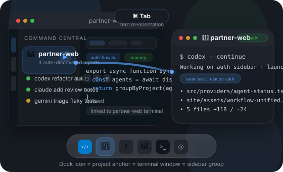

Auto-Discovery
Sees agents VS Code cannot
Command Central finds agents running in external terminals and surfaces them in one sidebar without manual registration.
Claude
Codex
Gemini
The VS Code sidebar that sees every AI coding agent, even the ones running in external terminals. Auto-discover Claude Code, Codex, and Gemini across Ghostty, iTerm2, Terminal.app, tmux, and VS Code itself.
1000+ tests. MIT licensed. Built by developers who run 10 agents daily.

Why it matters
Command Central keeps the landing page tight, but the core value is broad: see all agents, know what they are doing, and intervene without leaving VS Code.
Command Central finds agents running in external terminals and surfaces them in one sidebar without manual registration.
Use the VS Code sidebar as your control plane instead of hopping between tabs, panes, and terminal windows.
Take action directly from the sidebar when an agent wedges, finishes the wrong task, or needs a clean rerun.
Open per-agent diffs and scan per-file additions and deletions before you jump into a detailed review.
Prompt summaries stay visible in the sidebar so you do not have to reconstruct intent from a terminal transcript.
When an agent stops making progress, Command Central calls it out so you can intervene before time disappears.
Each agent surfaces file-level change counts, which makes it obvious who touched what and how much.
Ghostty Launcher integration adds durable project identity in the Dock, but the core product works even when you use other terminals.
How it works
No build step, no session naming ritual, no special terminal wrapper required for the main experience.
Install the extension
Get Command Central from the VS Code Marketplace and open the sidebar in your normal editor workflow.
Run agents where you already work
Claude Code, Codex, and Gemini can keep running in Ghostty, iTerm2, Terminal.app, tmux, or VS Code terminals.
Manage them from one sidebar
See prompts, detect stuck sessions, inspect output, restart work, and review diffs without leaving VS Code.
Comparison
The wedge is simple: Command Central sees external terminal agents that native VS Code tooling and terminal multiplexers do not unify inside the editor.
| Capability | Command Central | VS Code Agent Sessions | dmux / cmux | FleetCode |
|---|---|---|---|---|
| See agents running in external terminals | ✅ Yes | ❌ No | ⚠️ In terminal only | ❌ No |
| Unified VS Code sidebar for Claude, Codex, and Gemini | ✅ Yes | ⚠️ Native sessions only | ❌ No | ⚠️ Product-specific |
| Kill, restart, and open output from the sidebar | ✅ Built in | ⚠️ Limited to native flow | ❌ Terminal commands | ⚠️ Limited |
| Per-agent diff viewer and per-file +/- counts | ✅ Built in | ❌ No | ❌ No | ❌ No |
| Prompt display and stuck-session detection | ✅ Yes | ⚠️ Partial | ❌ No | ❌ No |
| Best fit | Agent-heavy developers managing many sessions at once | Single-editor native agent workflows | Terminal-first multiplexing | Separate agent product workflow |
Install
Single extension install. Static landing page. No new build tooling. Your existing terminal workflow stays intact.
code --install-extension oste.command-central